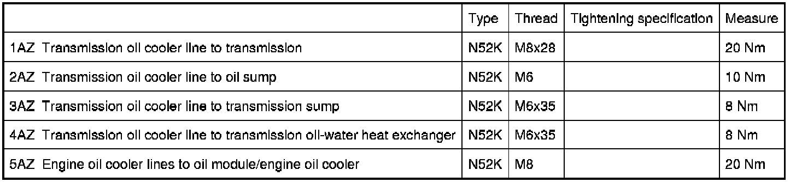

Operation CHARM
: Car repair manuals for everyone.
Home
>>
BMW
>>
2007
>>
X3 3.0si (E83) L6-3.0L (N52K)
>>
Repair and Diagnosis
>>
Engine, Cooling and Exhaust
>>
Cooling System
>>
Specifications
>>
Mechanical Specifications
>>
17 22 Transmission Oil Cooler Lines
17 22 Transmission Oil Cooler Lines
17 22 Oil Cooler Pipes
